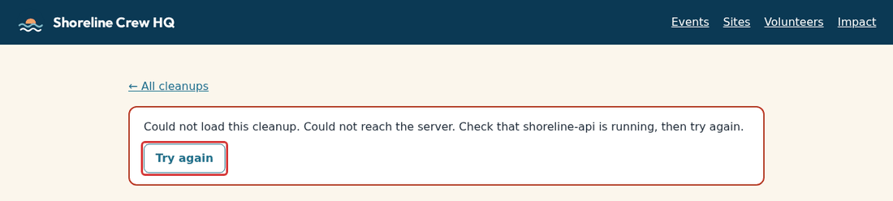
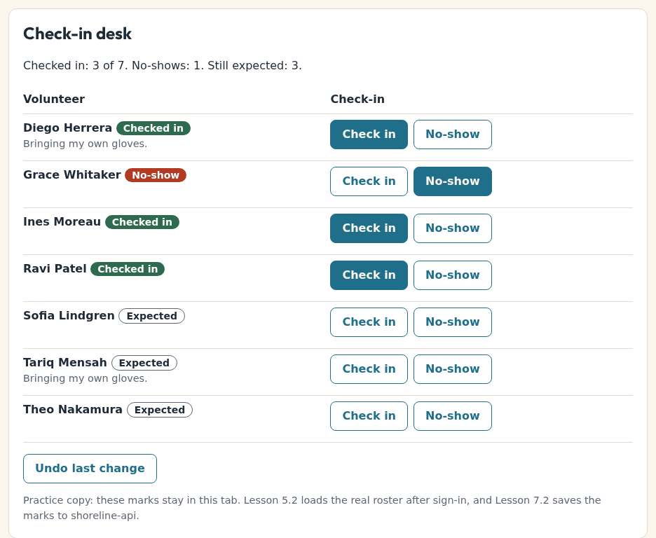

Session 12: Suspense and Error Boundaries, and useReducer
How to teach Lessons 4.4 and 5.1 of React + TypeScript: Build a Modern Web App: Suspense and use() with a stable promise, typed error boundaries with fallbacks that help, then useReducer with actions as a discriminated union, pure reducers, never and assertNever, and the check-in desk.
How to Use This Guide
- Same rhythm for both lessons: frame → live demo → guided lab (new practice) → start the lesson's project. The rest goes home.
- Type, do not paste. Every command below was run to produce the output under it, in a learner's terminal, on a copy of shoreline-hq exactly as each lesson leaves it. Where a lesson shows the same command, the kit's output IS the lesson's card (the generator stops otherwise).
- Two lessons, 145 + 145 minutes for a learner alone; the room has 75 minutes for each. Lesson 5.1's desk goes on 4.4's cleanup page (Step 5), so the room does 5.1 Steps 1 to 3 (independent of the page) and the homework order is 4.4 first.
lesson-17-startis the catch-up for 5.1. - Session 13 opens with Checkpoint 2 (Modules 4 and 5 so far: Lessons 4.1 to 5.1, and what 5.2 has shown). Say so at the wrap-up; today's self-check and labs are good practice.
- Keep
lesson_16.htmlandlesson_17.htmlopen: the what-boundaries-catch table, the class crash course and the useState-or-useReducer table are worth showing as they are.
A class component (the only one in the course) and a reducer with typed actions both look like ceremony until they pay off. Protect the moments that pay: the uncached promise that loads forever (why a cache exists), the Try again that tries nothing (why onRetry forgets), and assertNever naming the missing case (why the union is worth typing).
Before the Session
- ☐ Projector machine: shoreline-hq at the END of Lesson 4.3 (or
lesson-16-start), both servers, a third terminal ready fornode server.ts --latency=4000(the Suspense fallback) and for stopping the API (the boundary's fallback). - ☐ Files to hand out: the
labs/folder withoutsolution/;lesson-16-start.zip(Lesson 4.3 finished),lesson-17-start.zip(4.4 finished: the catch-up for 5.1),lesson-18-start.zip(both finished). - ☐ Run the kit check once:
python3 labs/check_labs.py module-12(8 runs, under a minute): the starters fail as shipped, the solutions pass their tests andtsc, and a demo run shows assertNever naming a removed case. - ☐ Board: the sign-in table (one place for the waiting, one announcement for the failure); the boundary tree from the lesson (App boundary → EventPage → ErrorBoundary → Suspense → EventDetails); the clipboard and the rule card; the reducer rules (pure, never change what you got, no side effects, same state when nothing changed).
Session 12 Agenda (3 hours)
| Clock | Minutes | Segment | What happens |
|---|---|---|---|
| 0:00 | 10 | Warm-up | Three retrieval questions on Lessons 4.2 and 4.3 (W1 to W3); who finished the dialog at home? |
| 0:10 | 10 | 4.4 Frame and mental model | The sign-in table: one place handles the waiting, one announcement handles the failure. |
| 0:20 | 20 | 4.4 Live demo | use() and Suspense, the promise that must stay the same, use() in try/catch, an error boundary class and its two silent traps. |
| 0:40 | 20 | 4.4 Guided lab | labs/module-12/l4_4-suspense-use-and-error-boundaries/starter: Tasks 1 and 3 in pairs (a promise cache, the boundary class). |
| 1:00 | 25 | 4.4 Start the lesson project | Steps 1 to 4: getEvent, eventPromises, ErrorBoundary, EventPage. |
| 1:25 | 10 | Break | Anyone without Lesson 4.3 finished: lesson-16-start is on the stick. |
| 1:35 | 10 | 5.1 Frame and mental model | The clipboard and the rule card: say what happened, one function decides the new state. |
| 1:45 | 20 | 5.1 Live demo | BagTally, wrong actions that do not compile, useReducer typed by inference, never and assertNever, a state changed in place. |
| 2:05 | 20 | 5.1 Guided lab | labs/module-12/l5_1-usereducer-with-discriminated-unions/starter: Tasks 1 and 2 in pairs (a pure reducer, let the compiler find the missing case). |
| 2:25 | 25 | 5.1 Start the lesson project | Steps 1 to 3: assertNever in SpotsLine, rosterReducer, the reducer run in Node. |
| 2:50 | 10 | Wrap-up | Exit ticket (3 questions), homework, Checkpoint 2 next session. |
| Total | 180 | Ends at 3:00. |
In the room. 145 + 145 = 290 minutes for a learner alone; the room has 150, 75 per lesson, each with its full shape.
Goes home (about 2 to 3 hours). Lesson 4.4 first: project Steps 5 and 6 (titles link to the page, the app-wide boundary and its test crash, the slow and stopped API) and the checklist, Exercises 1 and 2, the quiz, the journal, Lab 4.4 Task 2. Then Lesson 5.1: Steps 4 to 6 (RosterTable, CheckInDesk on /events/e17, the keyboard check) and the checklist, Exercises 1 and 2, the quiz, the journal, Lab 5.1 Task 3. Then review for Checkpoint 2.
Protect, in this order: the uncached promise; Try again that forgets; assertNever naming the missing case; 4.4 Steps 1 to 4. Cut first: the useReducer<S, A> step, the Node run (homework), the try/catch step (the lab does not need it).
Opening Segment
Warm-up
10 min- Three questions (6m). W1 to W3 on the slide and in the workbook; fingers for A to D.
- Show of hands (4m). Who has the Cancel cleanup dialog working? Today's EventPage is a new page; anyone behind uses
lesson-16-startand keeps their own code for later.
W1 A; W2 B; W3 B. The reasons are in the Answer Key.
Lesson Plans
Suspense, use() and Error Boundaries
75 min- Explain what Suspense does and where a <Suspense> boundary belongs in a component tree
- Read a promise while rendering with use(), typed, and keep the promise stable so it is not requested again on every render
- Write a typed error boundary as a class component, and say which errors it catches and which it does not
- Design fallbacks that help people: a clear message, "not found" told apart from "could not load", and a Try again that really tries again
- Judge where Suspense belongs in a single-page app today, and what React Router (Module 6) and TanStack Query (Module 7) take over later
| 10m | Frame: the sign-in table; Suspense splits the jobs; the boundary tree |
| 20m | Live demo: use() + Suspense, the uncached promise, try/catch, the boundary class and its traps, a fallback that helps |
| 20m | Guided lab: l4_4-suspense-use-and-error-boundaries/starter, Tasks 1 and 3 |
| 25m | Start the lesson project: Steps 1 to 4 |
From the lesson: "On cleanup morning, volunteers do not each work out what to do while the crew lead unloads the van. They wait at the sign-in table, where one person says 'we start in ten minutes, grab a coffee'. That table is a Suspense boundary: one place that handles waiting for everyone behind it. And when the tide is too high to start, one announcement at the table says what happened and what comes next. That is the error boundary. The volunteers (your components) just do the cleanup when it starts."
Then the honest part: "The hard part of use() is not the Hook; it is where the promise comes from." Someone must start the request, keep the promise, decide when it is stale and forget it after an error: a cache. Today it is ten lines (eventPromises.ts); Lesson 7.1's TanStack Query replaces it. The boundaries are the part that lasts.
Scratch experiments first, then the finished project code (stage files, checked by the kit).
- use() and a Suspense boundary (4m). In shoreline-hq at the end of Lesson 4.3,
src/Scratch.tsxwith the lesson's SiteCount demo: a promise started once, outside the component, read withuse()inside<Suspense>.import { Suspense, use } from 'react' import { getSites } from './api/client.ts' // Started once, when this file is first imported: every render gets the same promise const sitesPromise = getSites() function SiteCount() { const sites = use(sitesPromise) // Site[]: the promise's value, once it has arrived return <p>The crew looks after {sites.length} beach sites.</p> } export function SiteCountDemo() { return ( <Suspense fallback={<p>Counting the beach sites…</p>}> <SiteCount /> </Suspense> ) }
Hover:use(sitesPromise)isSite[]: no| undefined, no LoadState. The component never runs to the end without its data; waiting and failing move to the boundaries above. - The promise must stay the same (4m). The natural first try,
use(getEvent(id)), typed live. Both tools:npx tsc -b && npm run lint
Found 0 warnings and 0 errors. Finished in …ms on 39 files with 150 rules using … threads.
Quiet. The page says "Loading the cleanup…" forever while requests keep going (the lesson measured well over a thousand in three seconds). Every render makes a new pending promise. Keep promises outside rendering: start them once, or ask a cache (eventPromise(id), Step 2). - Not in try/catch (3m). Wrap the
use()in try/catch "to handle errors":npm run lint
⚠ react(error-boundaries): Avoid constructing JSX within try/catch ╭─[src/Scratch.tsx:7:13] 6 │ const event = use(eventPromise(id)) 7 │ return <h2>{event.title}</h2> · ─┬ · ╰── Avoid constructing JSX within try/catch 8 │ } catch { ╰──── help: React does not immediately render components when JSX is constructed, so rendering errors will not be caught by the try/catch. Wrap the component in an error boundary instead note: React Compiler skipped optimizing this component or hook. Additional guidance: https://react.dev/reference/eslint-plugin-react-hooks/lints/error-boundaries × react-hooks(rules-of-hooks): React Hook "use" cannot be called in a try/catch block. ╭─[src/Scratch.tsx:6:19] 5 │ try { 6 │ const event = use(eventPromise(id)) · ──────────┬────────── · ╰── This Hook call is inside a try/catch block. 7 │ return <h2>{event.title}</h2> ╰──── Found 1 warning and 1 error. Finished in …ms on 39 files with 150 rules using … threads.use() suspends by throwing, so the catch would show "Could not load" while the request is still out (measured). Errors from use() belong to an error boundary. - A typed error boundary (5m). Step 3's class, read top down: typed props and a union state, the static method React calls, the retry arrow, the fallback as a component.
shoreline-hq/src/components/ErrorBoundary.tsx
type ErrorBoundaryState = { failed: false } | { failed: true; error: unknown } // React has no Hook for catching errors yet, so an error boundary is a class component. export class ErrorBoundary extends Component<ErrorBoundaryProps, ErrorBoundaryState> { state: ErrorBoundaryState = { failed: false } // React calls this when a child throws while rendering; the result becomes the new state static getDerivedStateFromError(error: unknown): ErrorBoundaryState { return { failed: true, error } } // An arrow function keeps `this` pointing at the boundary when a button calls it retry = () => { this.props.onRetry?.() this.setState({ failed: false })
Two traps tsc cannot always see. Leave out the field's annotation: TS2416 (below). Leave outstatic: tsc and the linter are BOTH quiet (the kit ran it), and the boundary catches nothing; React's console saysgetDerivedStateFromError() is defined as an instance method and will be ignored. -
npx tsc -b
src/components/ErrorBoundary.tsx:21:3 - error TS2416: Property 'state' in type 'ErrorBoundary' is not assignable to the same property in base type 'Component<ErrorBoundaryProps, ErrorBoundaryState, any>'. Type '{ failed: boolean; }' is not assignable to type 'Readonly<ErrorBoundaryState>'. Property 'error' is missing in type '{ failed: boolean; }' but required in type 'Readonly<{ failed: true; error: unknown; }>'. - A fallback that helps (4m). EventPage owns the boundaries; the back link sits outside both. 404 is not something to retry; anything else gets Try again, which forgets the rejected promise first (a rejected promise stays rejected).
shoreline-hq/src/pages/EventPage.tsx
export function EventPage({ eventId }: EventPageProps) {
- A new promise in render. Loading forever. Coach: "is it the same promise on the next render?" (Self-check Q2.)
- try/catch around use(). Coach: "use() suspends by throwing: what would your catch catch?" (Q3.)
- Try again that tries nothing. Coach: "what does the cache still hold?" then onRetry forgets. (Q6.)
Folder: labs/module-12/l4_4-suspense-use-and-error-boundaries/starter/ with labs/module-12/l4_4-suspense-use-and-error-boundaries/TASKS.md; your reference is labs/module-12/l4_4-suspense-use-and-error-boundaries/solution/. A site panel instead of a cleanup page: a promise cache, use() inside Suspense, a typed boundary class with a fallback that tells a 404 from a failure. The pretend server answers with the API's saved answers (a site, the 404 body, a 500 on request). Needs npm install once in starter/.
- Run it as shipped (2m): five of six fail; the click-handler test already passes (a boundary that catches nothing behaves the same: worth saying).
- Task 1 (5m): the Map cache and forgetSite. Task 3 (10m): the class; then Task 2's panel if time allows.
- Expected when done:
✓ src/lab.test.tsx (6 tests)
✓ Task 1: one promise per id, until it is forgotten
✓ Task 2: the fallback while waiting, then the site, with one request
✓ Task 2: an id the API does not have is "Site not found", with nothing to retry
✓ Task 2: a failure offers Try again, and Try again really asks again
✓ Task 3: the boundary shows its fallback, and retry renders the children again
✓ Task 3: an error in a click handler is NOT caught: the page stays as it is
Tests 6 passed (6)- Debrief (3m): "Which test proves Try again forgets?" (two requests for pelican-point). "What did the click-handler test prove?"
The lesson project is A Page for Every Cleanup, six steps. In the room: Steps 1 to 4.
- Step 1 (5m):
isCleanupEventDetailandgetEvent(id). Leave out'site' in valueonce:
src/api/client.ts:69:48 - error TS2339: Property 'site' does not exist on type 'CleanupEvent'.
69 return isCleanupEvent(value) && isSite(value.site)
~~~~
Found 1 error in src/api/client.ts:69- Step 2 (4m):
eventPromises.ts, one promise per id (temporary until 7.1). Step 3 (8m): ErrorBoundary. Step 4 (8m): EventPage with the back link outside both boundaries. - Goes home: Step 5 (App's regex route and the app-wide boundary, titles as links, the test crash) and Step 6 (slow, stopped, not found).


- What does a component do when use() gets a pending promise? Answer: suspends; the nearest Suspense shows its fallback.
- Why a class for the boundary? Answer: catching render errors needs getDerivedStateFromError; there is no Hook for it.
- Why does a 404 get no Try again? Answer: trying again would not help; it is not found.
Workbook self-check, items Q1 to Q6 (at home).
Answers: Q1 B) The header and the back link, and the Suspense fallback below them; Q2 "Loading…" forever, with requests going out non-stop; keep ONE promise per id (eventPromise(id)) instead of a new one every render; Q3 C) oxlint: use() must not sit in try/catch; its errors belong to an error boundary; Q4 D) A component inside it that throws while rendering; Q5 A) A type annotation on the field: state: ErrorBoundaryState = { failed: false }; Q6 A rejected promise stays rejected: without forgetting it, the retry reads the same failure and sends no request. Full set with explanations in the Answer Key.
Support: draw the boundary tree and let learners point where each failure lands. Stretch: Exercise 3 (a generic keepPromises<T> and an impact section with its own boundaries), Going Further (focus after a successful retry).
useReducer with Discriminated Unions
75 min- Recognize state whose updates follow rules, and explain why useReducer suits it better than several useState calls
- Describe every state change as an action, typed as a discriminated union, and read the errors TypeScript gives for a wrong action
- Write a pure reducer that returns new state instead of changing the old one, and type useReducer and dispatch by letting TypeScript infer them
- Use the never type and an assertNever helper so the compiler reports every switch that misses a case
- Build a check-in desk with undo for today's cleanup, and say which parts of it later lessons keep
| 10m | Frame: state that follows rules; the clipboard and the rule card; the reducer rules |
| 20m | Live demo: BagTally, wrong actions, useReducer<S, A>, never and assertNever, state changed in place, the reducer in Node |
| 20m | Guided lab: l5_1-usereducer-with-discriminated-unions/starter, Tasks 1 and 2 |
| 25m | Start the lesson project: Steps 1 to 3 |
From the lesson: "At the sign-in table, volunteers do not grab the clipboard and scribble on it. They say what happened: 'Diego is here.' The crew lead hears that, checks the rule card taped to the clipboard, and writes the new state of the roster." Action, dispatch, reducer, state. Components describe what happened; one function decides how the state changes.
Then the design rule that makes the desk last: server data stays out of reducers. The reducer holds only today's marks and their undo history; the roster rows arrive as a prop, so Lesson 5.2 can load them from the API without touching the reducer.
In shoreline-hq at the end of Lesson 4.4; Scratch experiments, then the project's reducer.
- A reducer and its actions (4m). The lesson's BagTally in
src/Scratch.tsx: a discriminated union ontype, a pure reducer that returns new objects,useReducer(tallyReducer, …)with no type arguments.import { useReducer } from 'react' interface Tally { bags: number weightKg: number } type TallyAction = { type: 'added'; weightKg: number } | { type: 'reset' } function tallyReducer(tally: Tally, action: TallyAction): Tally { switch (action.type) { case 'added': return { bags: tally.bags + 1, weightKg: tally.weightKg + action.weightKg } case 'reset': return { bags: 0, weightKg: 0 } } } export function BagTally() { const [tally, dispatch] = useReducer(tallyReducer, { bags: 0, weightKg: 0 }) return ( <section> <p role="status"> {tally.bags} bags, {tally.weightKg} kg </p> <button type="button" onClick={() => dispatch({ type: 'added', weightKg: 4 })}> Add a 4 kg bag </button> <button type="button" onClick={() => dispatch({ type: 'reset' })}> Reset </button> </section> ) }
Hover:tallyisTally,dispatchtakes only aTallyAction.typeis the discriminant almost every React codebase uses for actions (kindstays for LoadState). - Wrong actions do not compile (3m). Change the buttons to
dispatch({ type: 'added' })anddispatch({ type: 'clear' }):npx tsc -b
src/Scratch.tsx:27:53 - error TS2345: Argument of type '{ type: "added"; }' is not assignable to parameter of type 'TallyAction'. src/Scratch.tsx:30:55 - error TS2322: Type '"clear"' is not assignable to type '"added" | "reset"'. Found 2 errors in the same file, starting at: src/Scratch.tsx:27The first names the member and its missing field; the second lists the types that exist. In VS Code, Ctrl+Space inside the quotes suggests them. - useReducer<S, A> is gone (2m). From older articles:
useReducer<RosterState, RosterAction>(…):npx tsc -b
src/Scratch.tsx:5:44 - error TS2344: Type 'RosterAction' does not satisfy the constraint 'AnyActionArg'. Type '{ type: "checkIn"; signupId: string; }' is not assignable to type 'AnyActionArg'. 5 const [roster] = useReducer<RosterState, RosterAction>(rosterReducer, initialRoster) ~~~~~~~~~~~~ Found 1 error in src/Scratch.tsx:5React 19's types changed what those parameters mean. Delete the angle brackets: annotate the reducer, infer the rest. - never, and the missing case (5m). Add
removedto the union with no case. With the annotated return type alone, tsc points at the RETURN TYPE:npx tsc -b
src/Scratch.tsx:13:59 - error TS2366: Function lacks ending return statement and return type does not include 'undefined'. 13 function tallyReducer(tally: Tally, action: TallyAction): Tally { ~~~~~ Found 1 error in src/Scratch.tsx:13Then the three-lineassertNeveras the default: the message names the exact action nobody handles: -
npx tsc -b
src/Scratch.tsx:21:26 - error TS2345: Argument of type '{ type: "removed"; weightKg: number; }' is not assignable to parameter of type 'never'. 21 return assertNever(action) ~~~~~~ Found 1 error in src/Scratch.tsx:21Anddefault: return stateinstead? Nothing at all (the kit ran it): the action silently does nothing. A Record lookup table is already exhaustive and needs no assertNever. - State changed in place (3m). In rosterReducer,
state.marks.set(…)thenreturn state. The project types marks asReadonlyMap:npx tsc -b
src/reducers/rosterReducer.ts:53:19 - error TS2339: Property 'set' does not exist on type 'ReadonlyMap<string, Mark>'. 53 state.marks.set(action.signupId, 'attended') ~~~ Found 1 error in src/reducers/rosterReducer.ts:53With a plain Map it compiles and lints clean, and the desk does not change on screen: the same object came back, React saw nothing new (measured). Copy first, then change the copy. - The reducer in Node (3m). A reducer is a plain function: the lesson's
scratch-roster.tsnext to package.json:node scratch-roster.ts
Map(2) { 's088' => 'attended', 's091' => 'no-show' } Map(1) { 's088' => 'attended' } history: 1 first state untouched: trueNo component, no browser, no clicking: what Lesson 9.1 turns into tests. Delete the file afterwards.
- Changing the state in place. Coach: "did you return a new object?" ReadonlyMap turns it into TS2339. (Q11.)
- Side effects in the reducer (a request, Date.now()). Strict Mode runs it twice. Coach: "the handler sends, the reducer records." (Q12.)
- default: return state. Coach: replace it with assertNever and let tsc list the work. (Q10.)
Folder: labs/module-12/l5_1-usereducer-with-discriminated-unions/starter/ with labs/module-12/l5_1-usereducer-with-discriminated-unions/TASKS.md; your reference is labs/module-12/l5_1-usereducer-with-discriminated-unions/solution/. A debris tally instead of the check-in desk; the reducer is tested as a plain function, the panel with clicks. Needs npm install once in starter/.
- Run it as shipped (2m): four failures;
npm run typecheck: TS2344 from the olduseReducer<Tally, TallyAction>line (Task 3). - Task 1 (8m): counted, reset; a count of 0 returns the SAME state (the test uses
toBe). Task 2 (8m): swap the default for assertNever and read the error that namesundoLast; the kit's demo run removes theresetcase from the solution:
src/tallyReducer.ts:41:26 - error TS2345: Argument of type '{ type: "reset"; }' is not assignable to parameter of type 'never'.
Found 1 error in src/tallyReducer.ts:41- Expected when done:
✓ src/lab.test.tsx (4 tests)
✓ Task 1: counted adds to its kind, and the old state is untouched
✓ Task 1: nothing to count gives back the SAME state; reset starts again
✓ Task 2: undoLast removes the newest count; with nothing to undo, the same state
✓ Task 3: the buttons count, the status line adds up, undo takes one back
Tests 4 passed (4)The lesson project is The Check-in Desk, six steps. In the room: Steps 1 to 3.
- Step 1 (6m): assertNever and SpotsLine's default; add
fewto Availability and read:
src/components/SpotsLine.tsx:23:26 - error TS2345: Argument of type '{ kind: "few"; spotsLeft: number; }' is not assignable to parameter of type 'never'.
23 return assertNever(availability)
~~~~~~~~~~~~
Found 1 error in src/components/SpotsLine.tsx:23- Step 2 (14m): rosterReducer, read in four parts (vocabulary, state, two helpers, the switch). Step 3 (5m):
node scratch-roster.ts(demo output above), then delete it. - Goes home: Step 4 (RosterTable with aria-pressed toggles), Step 5 (CheckInDesk on /events/e17 with derived counts and an aria-disabled Undo), Step 6 (keyboard check).

- What does a reducer return when nothing changed? Answer: the same state object.
- Why annotate the reducer and not useReducer? Answer: React 19 infers state and dispatch from it; useReducer<S, A> is TS2344.
- What does assertNever's error give you? Answer: the exact union member no case handles.
Workbook self-check, items Q7 to Q12 (at home).
Answers: Q7 C) Marks and an undo history that must change together, by rules; Q8 A) { type: 'added' } without a weight, and { type: 'clear' }, which is no TallyAction; Q9 No case handles removed: add a 'removed' case to that switch; Q10 C) Nothing anywhere: it compiles, and the action silently does nothing; Q11 Nothing changes on screen: the same state object came back, so React saw no change and did not render; Q12 B) Strict Mode runs the reducer twice to flush out impure reducers; a pure reducer does not care. Full set with explanations in the Answer Key.
Support: write the four reducer rules on a card. Stretch: Exercise 3 (an Undo label that says what it undoes), Going Further (Redo), Lab 5.1's stretch.
Closing
On the slide; sort the answers for Checkpoint 2's emphasis.
- What does a Suspense boundary handle, and what does an error boundary handle? Answer: the waiting (its fallback while something inside suspends); the failing (its fallback when something inside throws while rendering, including a rejected use()).
- Why must the promise given to use() be the same on every render? Answer: a suspended component renders again from the top; a new promise is pending again, so it would suspend forever.
- What does
return assertNever(action)as a reducer's default give you? Answer: a compile error naming any action no case handles (and a loud failure at run time).
- Lesson 4.4 first: Steps 5 and 6 and the checklist; Exercises 1 and 2; the quiz; the journal; Lab 4.4 Task 2.
- Then Lesson 5.1: Steps 4 to 6 and the checklist; Exercises 1 and 2; the quiz; the journal; Lab 5.1 Task 3.
- Workbook self-check Q1 to Q12, and review for Checkpoint 2 (Lessons 4.1 to 5.1: effects and fetching, Hooks, refs, Suspense and boundaries, reducers).
- Behind? Start 5.1's homework from
lesson-17-start.
- Lesson 5.1 finished (or
lesson-18-start), both servers starting. - Session 13 opens with Checkpoint 2 (30 minutes), then Lesson 5.2: typed context and sign-in (the desk loads the real roster).
- The workbook, with your self-check answers.
If You Run Long or Short
- Protect: the uncached promise, Try again that forgets, assertNever, 4.4 Steps 1 to 4.
- Cut first (saves 5m): the useReducer<S, A> and Node steps (both are homework).
- Cut second (saves 8m): 4.4's Step 4 typed live (hand out the lesson's EventPage and read it).
- 4.4 Step 6 live:
--latency=4000, then the API stopped, then /events/no-such-cleanup. - 5.1 Exercise 2 together: predict, then run (
node ex2-predict.ts):
checkIn attended 1 false checkIn attended 1 true markNoShow no-show 2 false undo attended 1 false undo expected 0 false undo expected 0 true